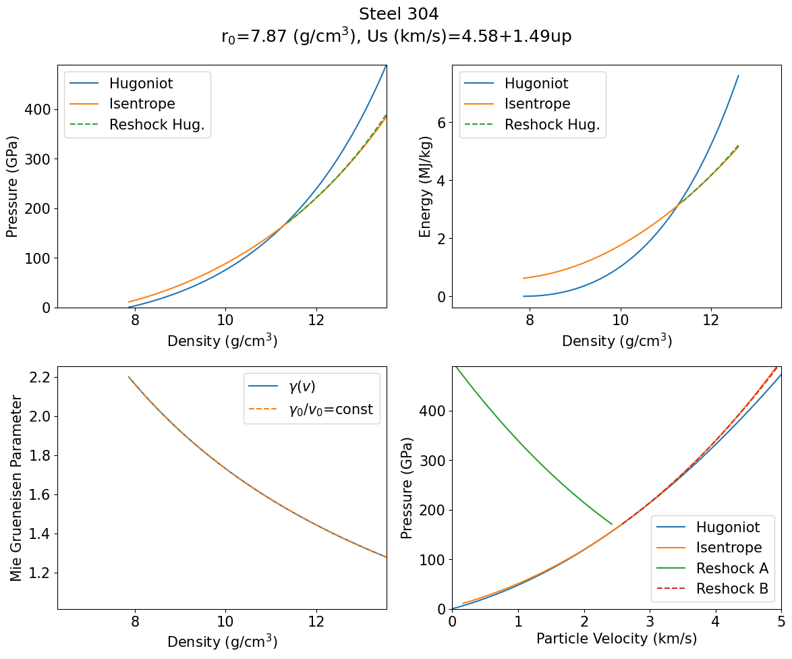
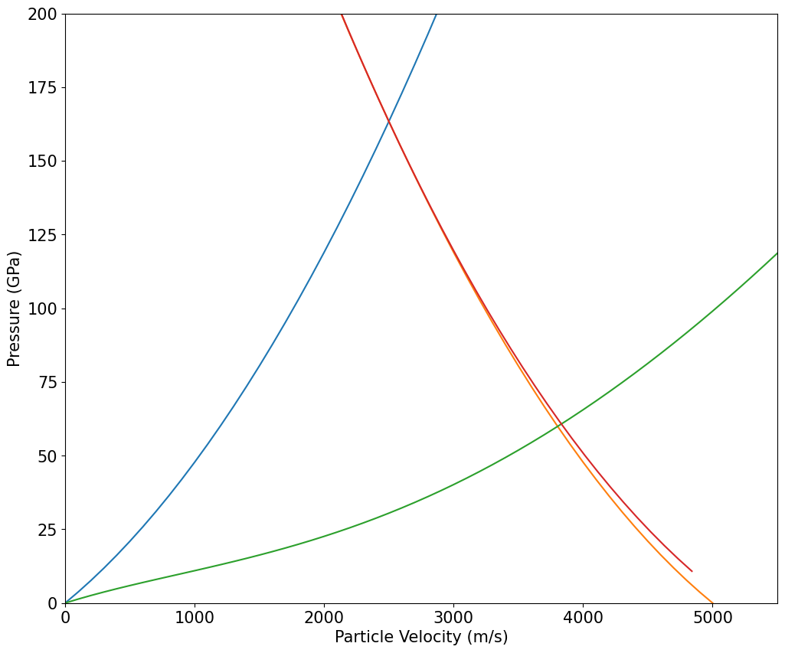
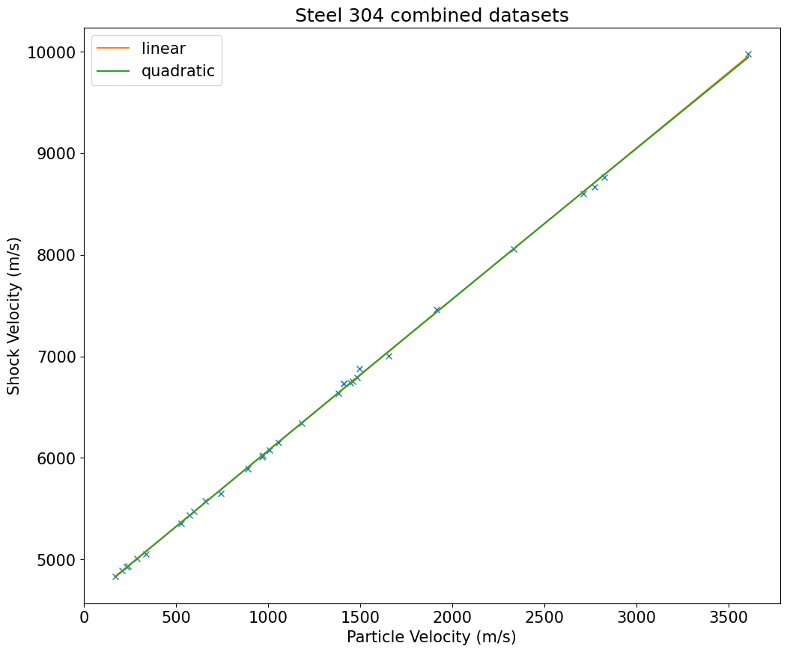
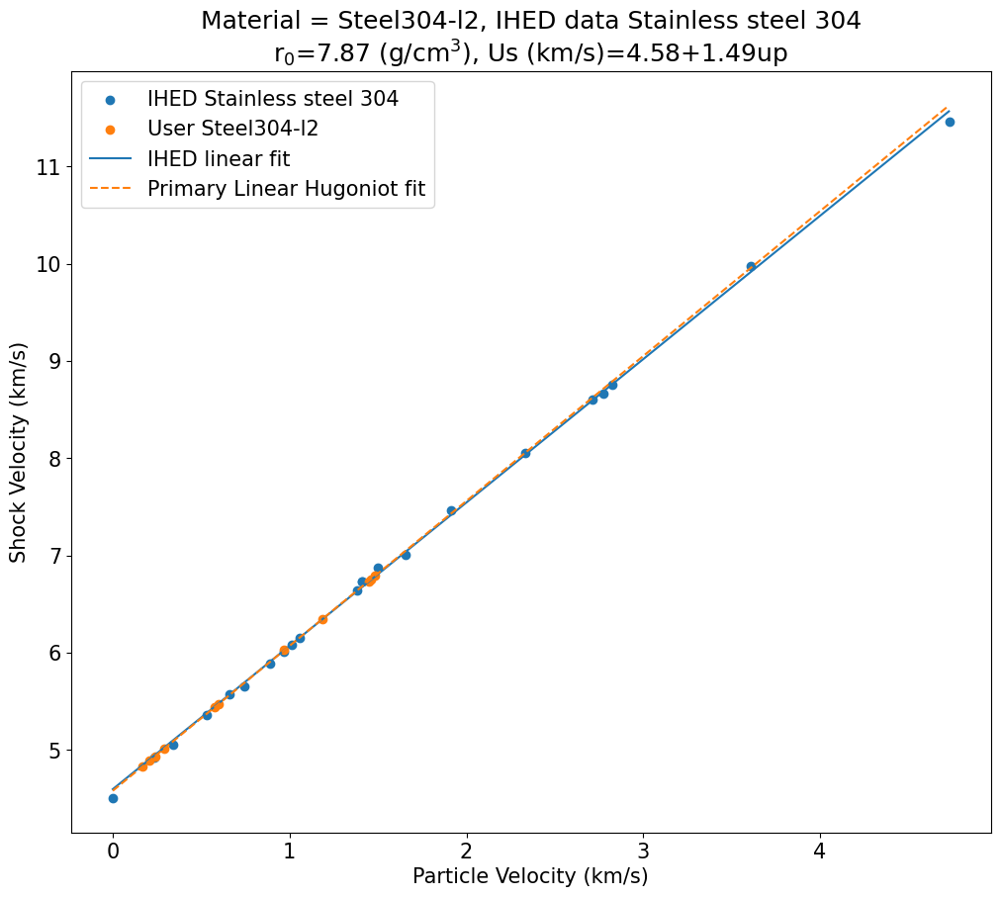
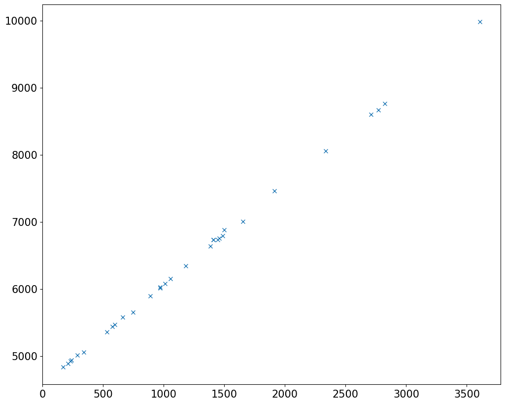

Fit Al 2024 Hugoniot#
About the IM_module#
The IM_module contains several function to interact with the shock Hugoniot data. Use the command help(IM) to list the classes and functions.
# uncomment the command below for information about the module
#help(IM)
Step 1: load the material-data.csv file#
Load the material database with the following comment. The parameters are stored in a DataFrame object called matdata. The imat object contains indexing information for book-keeping purposes in the code. If you want to change the format of the database, update the material indices function to preserve the code functionality.
For ease of use the materials database file uses g/cm3 and km/s, as is most common in the shockwave literature.
The file is converted to MKS when it is read in and all the functions are expecting MKS units.
# load the materials data table; change matfilename if not using default
matdata, imat = IM.ReadMaterials(matfilename='materials-data.csv')
Plotting the data and fits#
Examples of initializing material objects, fitting, and plotting functions.
P = 163.4 (GPa), u<sub>p</sub> = 2.5 (km/s), U<sub>S</sub> = 0.0 (km/s), E = 3.12 (MJ/kg), ρ = 11.26 (g/cm<sup>3</sup>)
P = 163.4 (GPa), u<sub>p</sub> = 2.5 (km/s), U<sub>S</sub> = 8.3 (km/s), E = 3.12 (MJ/kg), ρ = 11.26 (g/cm<sup>3</sup>)
163400875000.0
2500.0

P = 163.4 (GPa), u<sub>p</sub> = 2.5 (km/s), U<sub>S</sub> = 0.0 (km/s), E = 3.12 (MJ/kg), ρ = 11.26 (g/cm<sup>3</sup>)
P = 22.26 (GPa), u<sub>p</sub> = 1.97 (km/s), U<sub>S</sub> = 8.3 (km/s), E = 1.95 (MJ/kg), ρ = 10.67 (g/cm<sup>3</sup>)
P = 22.26 (GPa), u<sub>p</sub> = 1.97 (km/s), U<sub>S</sub> = 5.12 (km/s), E = 1.95 (MJ/kg), ρ = 3.59 (g/cm<sup>3</sup>)
[<matplotlib.lines.Line2D at 0x7f488d4702d0>]

duffy = pd.read_csv('database-user/Duffy-Table6.csv')
display(duffy)
| Shot | Up km/s | Up_err | Us km/s | Us_err | Rho g/cm3 | Rho_err | Stress GPa | Stress_err | |
|---|---|---|---|---|---|---|---|---|---|
| 0 | 746 | 0.209 | 0.005 | 4.891 | 0.011 | 8.208 | 0.019 | 8.1 | 0.2 |
| 1 | 747 | 0.170 | 0.003 | 4.834 | 0.011 | 8.119 | 0.013 | 6.5 | 0.1 |
| 2 | 749 | 0.239 | 0.004 | 4.936 | 0.012 | 8.257 | 0.011 | 9.3 | 0.1 |
| 3 | 771 | 0.288 | 0.012 | 5.010 | 0.021 | 8.298 | 0.024 | 11.3 | 0.5 |
| 4 | 802 | 0.575 | 0.008 | 5.437 | 0.016 | 8.810 | 0.013 | 24.6 | 0.4 |
| 5 | 804 | 0.970 | 0.006 | 6.025 | 0.090 | 9.385 | 0.086 | 46.0 | 3.6 |
| 6 | 809 | 1.183 | 0.024 | 6.342 | 0.038 | 9.630 | 0.035 | 58.7 | 1.5 |
| 7 | 812 | 1.458 | 0.022 | 6.753 | 0.370 | 9.983 | 0.041 | 77.1 | 1.6 |
| 8 | 813 | 0.597 | 0.008 | 5.470 | 0.016 | 8.831 | 0.013 | 25.7 | 4.0 |
| 9 | 847 | 1.447 | 0.015 | 6.736 | 0.027 | 10.050 | 0.022 | 76.9 | 1.1 |
| 10 | 862 | 1.485 | 0.021 | 6.793 | 0.035 | 10.102 | 0.030 | 79.6 | 1.6 |
duffy_up = np.asarray(duffy['Up km/s'])*1000.
print(duffy_up)
duffy_us = np.asarray(duffy['Us km/s'])*1000.
print(duffy_us)
moredata = np.concatenate(([7870],duffy_up,duffy_us))
[ 209. 170. 239. 288. 575. 970. 1183. 1458. 597. 1447. 1485.]
[4891. 4834. 4936. 5010. 5437. 6025. 6342. 6753. 5470. 6736. 6793.]
mat1.GetIHED(moredata=moredata)
mat1.PlotIHED()
Including user data
Stainless steel 304 Steel 304 fit (mks) c0= 4596.26887151552 s1= 1.4739547307133405 s2= 0.0 d= 0.0
N=33. Fit stdev (km/s)=0.037054102492259045
Primary Hugoniot parameters c0,s1,s2,d= 4580.0 1.49 0.0 0.0
print(mat1.ihed.uparr)
[1497. 2824. 3607. 4730. 0. 232. 339. 529. 659. 745. 889. 969.
1010. 1057. 1383. 1409. 1409. 1653. 1915. 2334. 2711. 2772.]
linear fit and covariance matrix:
(array([1.49049663e+00, 4.57920929e+03]), array([[ 2.85192390e-05, -3.54779333e-02],
[-3.54779333e-02, 6.52812465e+01]]))
min up = 170.0
max up = 3607.0
quadratic fit and covariance matrix:
(array([-4.19485703e-06, 1.50425650e+00, 4.57169415e+03]), array([[ 2.69935130e-11, -8.85434802e-08, 4.83592677e-05],
[-8.85434802e-08, 3.19303958e-04, -1.94535898e-01],
[ 4.83592677e-05, -1.94535898e-01, 1.52710713e+02]]))
min up = 170.0
max up = 3607.0
<matplotlib.legend.Legend at 0x7f4885f5a850>

mat4 = IM.Material() # create material object named mat4
matname='Steel304-l2' # material name in the material-data.csv file
mat4.DefineParamsID(matname,matdata,imat) # load the parameters for this material
mat4.MakeHugoniot(up)
mat4.GetIHED(moredata=moredata)
mat4.PlotIHED()
Including user data
Stainless steel 304 Steel304-l2 fit (mks) c0= 4596.26887151552 s1= 1.4739547307133405 s2= 0.0 d= 0.0
N=33. Fit stdev (km/s)=0.037054102492259045
Primary Hugoniot parameters c0,s1,s2,d= 4580.0 1.49 0.0 0.0

ind = np.where((mat1.ihed.uparr > 0.) & (mat1.ihed.uparr < 4000.))
up1 = mat1.ihed.uparr[ind]
us1 = mat1.ihed.usarr[ind]
upall = np.concatenate((up1,duffy_up))
usall = np.concatenate((us1,duffy_us))
plt.plot(upall,usall,'x')
[<matplotlib.lines.Line2D at 0x7f488de73b10>]
